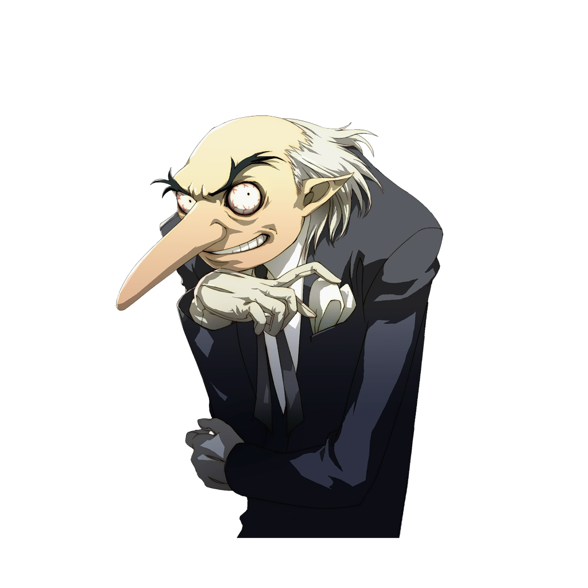

El Compendio de Personas
Bienvenido al Velvet Room. Este sitio web es un registro detallado de las entidades y criaturas que habitan el mar del alma. Aquí podrás documentar los perfiles, la mitología y las habilidades de los Personas que han sido invocados a lo largo de nuestro viaje. Cada criatura posee un Arcano y un elemento único que debe ser estudiado para dominar su poder.
"El poder de un Persona no reside solo en su fuerza bruta, sino en el vínculo que forjas con él. Conocer su origen es el primer paso para despertar su verdadero potencial."
Selecciona un Persona
Explora las páginas individuales para conocer los atributos de combate, los elementos, la mitología y las habilidades sociales de estas criaturas.
¿Por qué registrar a las criaturas?
Este proyecto fue creado como parte del curso de Tecnología y producción textual I. Se inspiró en la interfaz del videojuego, utilizando su característico estilo visual rojo, negro y blanco.
